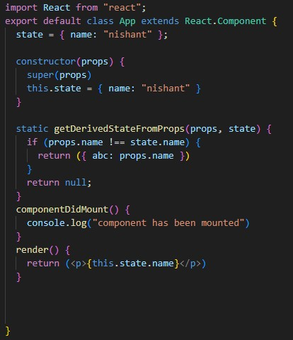
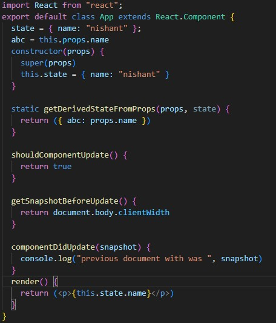
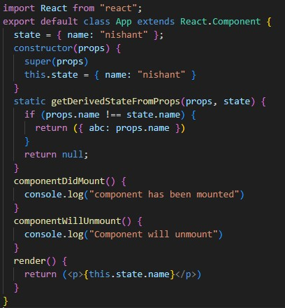
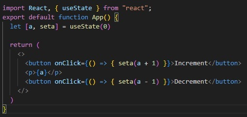
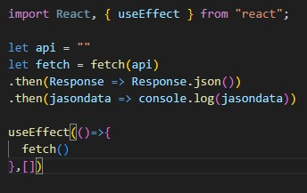

Explain Life cycle in Class Component and functional component with Hooks
Class Component
⇨In class components, React provides several lifecycle methods that allow you to hook into different stages of a component's life
⇨It is maintained by Meta and a community of individual developers and companies.
- Mounting
- Updating
- Unmount
–Mounting means putting elements into the DOM.
–React has four built-in methods that gets called, in this order, when mounting a component
⟶ constructor()
⟶getDerivedStateFromProps()
⟶render()
⟶componentDidMount()
Example
–The next phase in the lifecycle is when a component is updated.
–A component is updated whenever there is a change in the component's state or props.
–React has five built-in methods that gets called, in this order, when a component is updated:
⟶getDerivedStateFromProps()
⟶shouldComponentUpdate()
⟶render()
⟶getSnapshotBeforeUpdate()
⟶componentDidUpdate()
Example
–The next phase in the lifecycle is when a component is removed from the DOM, or unmounting as React likes to call it.
–React has only one built-in method that gets called when a component is unmounted:
⟶componentWillUnmount()
Example
Functional Component
⇨In React, functional components are a way of defining UI components using JavaScript functions rather than classes.
⇨Prior to the introduction of React Hooks, functional components were limited in their capabilities compared to class components.
- useState
- useEffect
–It is a Hook that allows you to add state variables to functional components.
–It returns an array with two elements: the current state value and a function to update that value
–It is a Hook that serves a similar purpose to lifecycle methods in class components.
–It allows you to perform side effects in your functional component.
